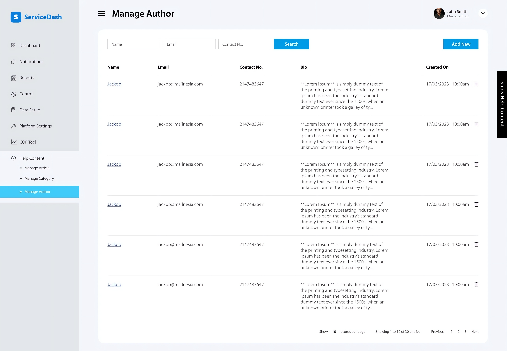
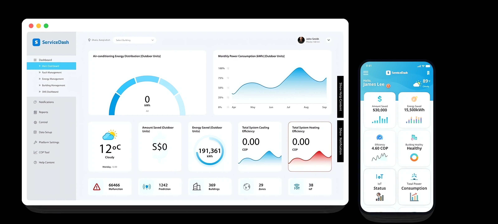
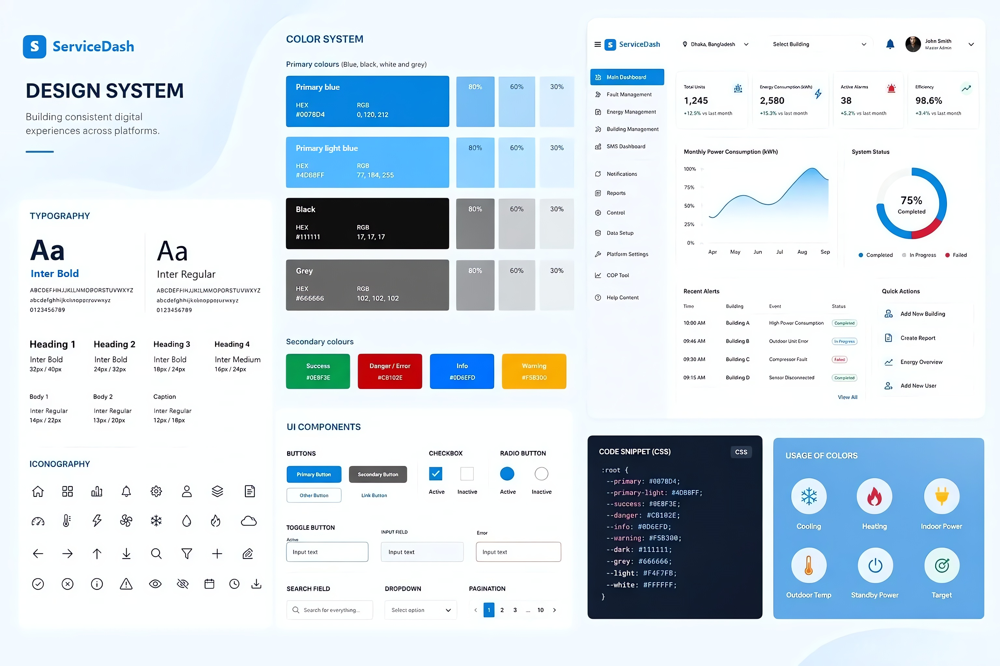
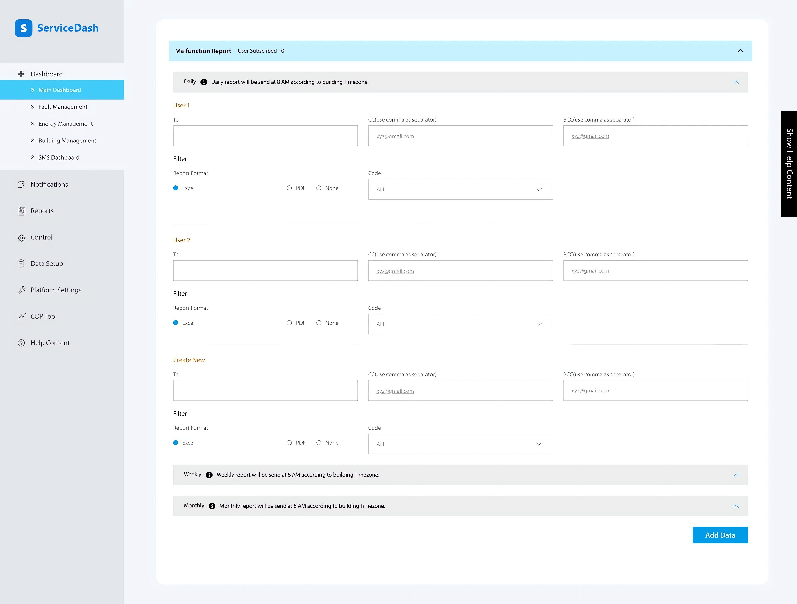
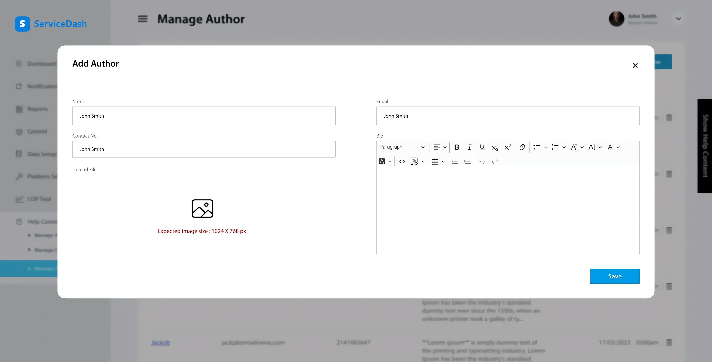
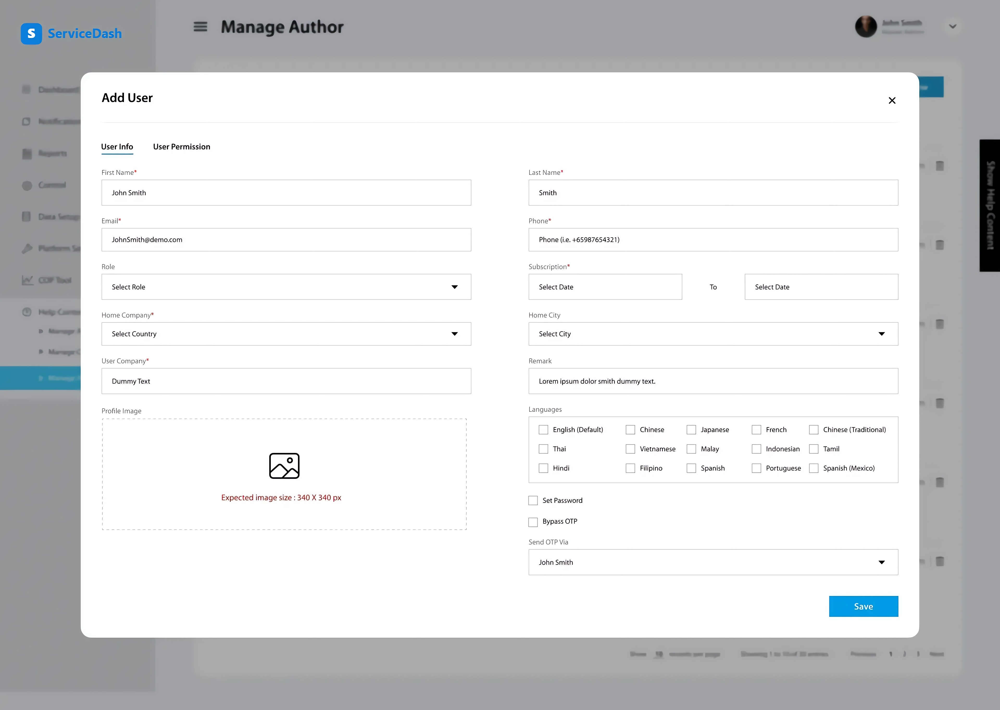
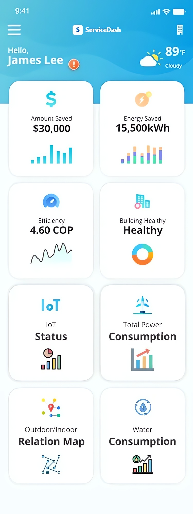
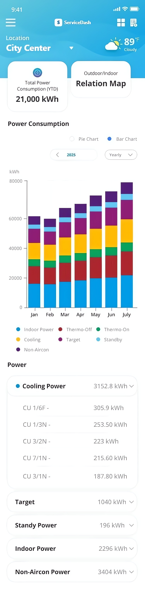
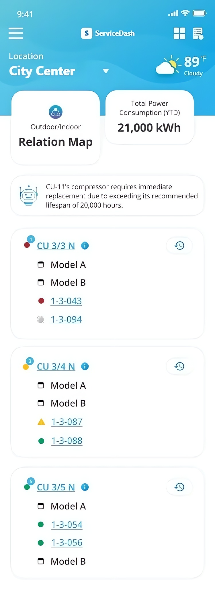

This is an internal management system for tracking service units, requests and maintenance history. The dashboard had to present dense operational data clearly, so that staff could scan it and act on it quickly.
In a data-heavy internal tool like this, the design work was less about visual decoration. It was more about information hierarchy: making sure that the most actionable data, such as open requests and SLA status, appeared first.
The order in which data appears on the screen.
I set up a compact type scale and consistent tag styling for statuses such as Scheduled, Review and OK. This lets staff scan dozens of rows at a glance without the interface feeling cluttered. The same components carry across the web dashboard and the mobile views.

| Event | Status |
|---|---|
| High Power Consumption | Completed |
| Outdoor Unit Error | In Progress |
| Compressor Fault | Failed |
| Sensor Disconnected | Completed |
Screens from the dashboard and the mobile views. They cover reports, service tracking and unit records.



The mobile views use the same components as the web dashboard.



The dashboard had to show dense operational data, and staff needed to scan open requests and SLA status quickly. Too much detail at once would slow them down. It would also hide the items that needed action first.
I set a clear information hierarchy that pushed the most actionable data to the top. I used calm and consistent status colours and kept the layout easy to scan. Staff could then read the state of the system and act in seconds.
| Time | Building | Event | Status |
|---|---|---|---|
| 10:00 AM | Building A | High Power Consumption | Completed |
| 09:46 AM | Building B | Outdoor Unit Error | In Progress |
| 09:30 AM | Building C | Compressor Fault | Failed |
| 09:15 AM | Building D | Sensor Disconnected | Completed |
I built the dashboard directly in HTML. This kept the handoff simple for a smaller internal tool. It still followed the same component discipline that I use on larger projects.
The result is a dashboard that shows what needs attention first. For an internal ops tool, this matters more than any amount of visual polish.